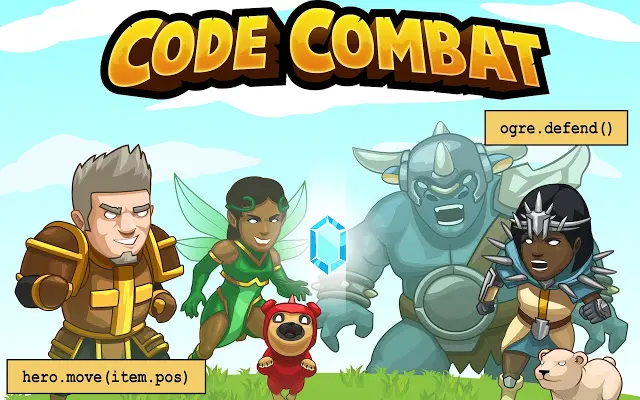
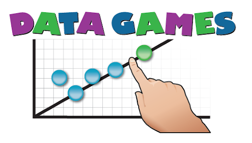
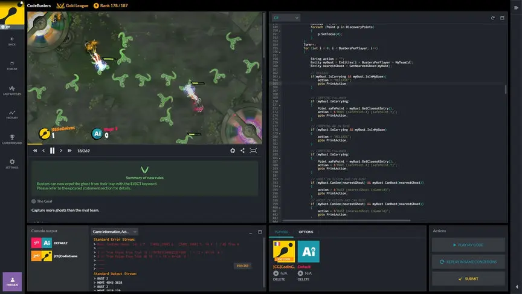
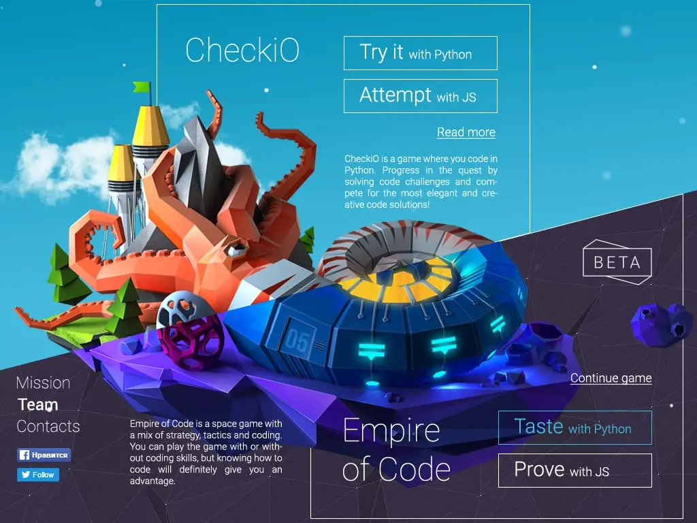
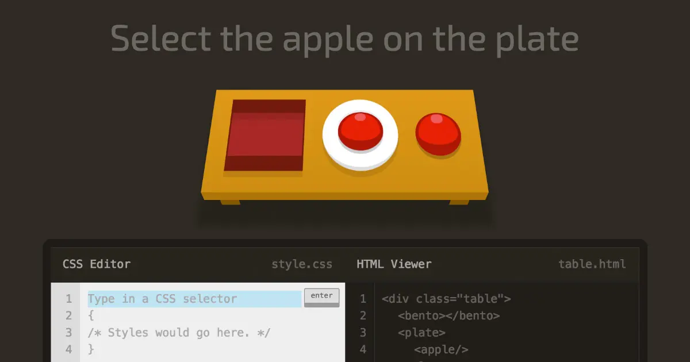

Machine Learning for Kids, de IBM
Se trata de un proyecto de aprendizaje gratuito desarrollado por el gigante de la computación, IBM, cuyo propósito fundamental es enseñar a los niños y niñas a crear y ensamblar modelos de aprendizaje para máquinas y programas. La aplicación sirve como un primer acercamiento a los conceptos básicos de la programación en general; el desarrollo de órdenes, funciones y comandos que permitan a un sistema operativo la toma de decisiones. Esta es la base fundamental para la creación de modelos de inteligencia artificial llevada a su máxima abstracción. No se necesita ningún tipo de conocimiento previo para manipular la veintena de actividades, para diferentes grupos etarios, que la aplicación ofrece.
Ir

CodeCombat
En este caso, nos encontramos bastante literalmente con lo que el nombre del juego indica: combate de código. Se trata de un juego de estrategia y aventura que utiliza la programación y el código como formas interactivas de narrativa y de acción de personajes. Cientos de jugadores de diferentes partes del mundo utilizan estas herramientas para programar el código disponible y mejorar su juego en cada nivel. Esta aplicación fue creada con el objetivo de enseñar Python y JavaScript, aunque también incorpora los conceptos necesarios para un marco teórico sobre la materia. Recomendado por profesionales y docentes por igual.
Ir

Data Games
Aquí no tratamos ya con una aplicación de aprendizaje y programación en particular, sino con un sitio web con muchas de ellas. El catálogo de juegos disponible en esta plataforma apunta a estimular el interés por los fundamentos de estadística y matemáticas necesarios tanto para la programación como también para la minería de datos. Se trata de una iniciativa conjunta entre cientos de desarrolladores del ámbito con el objetivo de volver más accesible estos contenidos complejos para los programadores del mañana. Desde Piedra, papel o tijeras a juegos de proximidad, estrategia, predicción e inducción, la plataforma tiene un gran catálogo para todos los intereses y todas las edades, por lo que definitivamente vale la pena visitarla.
Ir

Cours-gratuit
Para aquellos que prefieren el método clásico de aprendizaje, Cours-Gratuit es un catálogo masivo de cursos abiertos en línea que proporciona a los alumnos los recursos para mejorar sus habilidades.
El sitio web presenta una gran selección de cursos de informática están destinados a todos los niveles, y accesibles en todos los idiomas y en todos los formatos educativos: HTML, PDF, DOC, etc., pero también en forma de tutoriales en vídeo. También encontrarás libros gratuitos sobre programación, desarrollo web, redes informáticas, sistemas operativos, software de dibujo, software de gestión y fotografía.
Ir
CodinGame
De manera similar al caso anterior, CodinGame es un sitio web que ayuda a mejorar las habilidades de programación mediante la resolución de problemas con diferentes niveles de complejidad. Gracias a una interfaz atractiva y una funcionalidad sublime, se puede jugar con amigos y compañeros de clase, lo que favorece el aprendizaje y fomenta el trabajo en equipo. Además, ofrece conocimientos importantes para el mundo de la computación y la programación, ya que los juegos de este sitio son diseñados en base a los líderes de la industria y las tendencias actuales.
Ir

CheckiO
Se trata de un sitio web para programar y desarrollar código. Su público objetivo es niños y jóvenes principiantes cuyos conocimientos sean escasos. El sitio cuenta con diferentes rompecabezas y desafíos de programación que deben resolverse mediante la implementación de Python y TypeScript. Su utilidad pasa por el formato amigable y entretenido del juego, lo que capta la atención y, por consiguiente, permite la concentración. Las herramientas utilizadas luego pueden ser trasladadas a otros juegos más complejos y divertidos y complementarlos, por lo que se trata de un gran primer acercamiento.
Ir

CSS Diner
Este es un juego muy particular dirigido a la enseñanza de Hojas de Estilo en Cascada —Cascading Style Sheets—, las cuales describen el funcionamiento de los elementos del lenguaje HTML que se visualizan en la pantalla. El juego tiene más de treinta niveles, cada uno de ellos más complejo que el anterior, y se enfoca en la incorporación del método básico de trabajo en lenguaje CSS de manera natural e intuitiva.
Por lo pronto, la situación parece haber sido resuelto de una manera, podríamos decir, un tanto poética, puesto que los mejores resultados en las investigaciones se han producido gracias a una de las actividades que, hasta hace relativamente poco, se consideró siempre una pérdida de tiempo: los videojuegos. Son muchos los estudios que avalan dicho enfoque y que advierten que los videojuegos son una de las mejores maneras de estimular el pensamiento crítico y desarrollar las capacidades cognitivas de niños y adolescentes.
Ir
